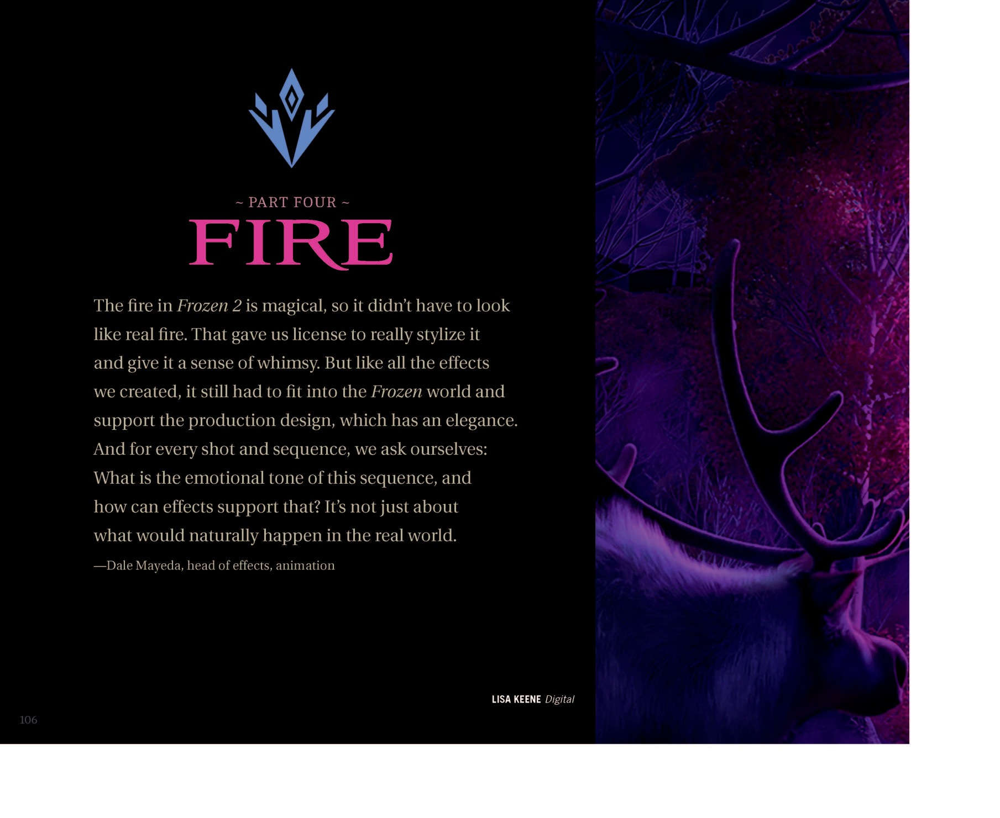
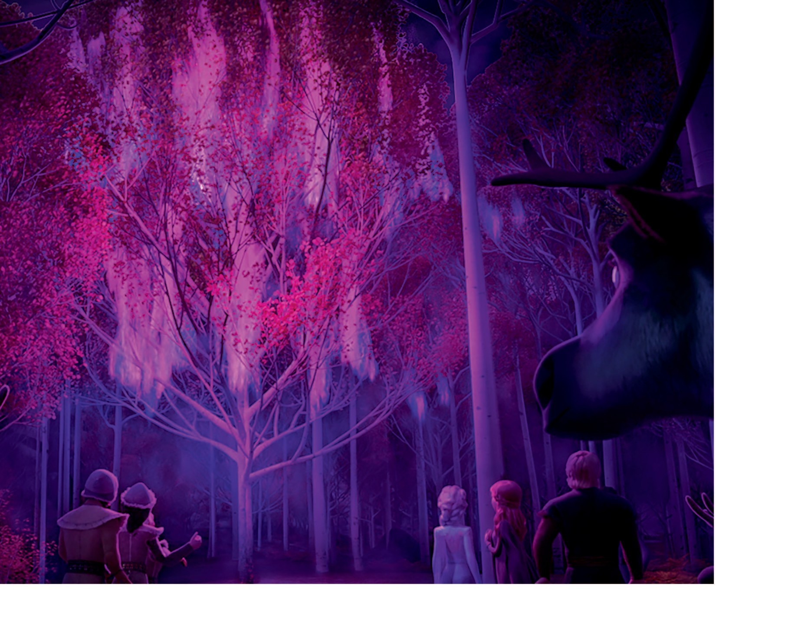
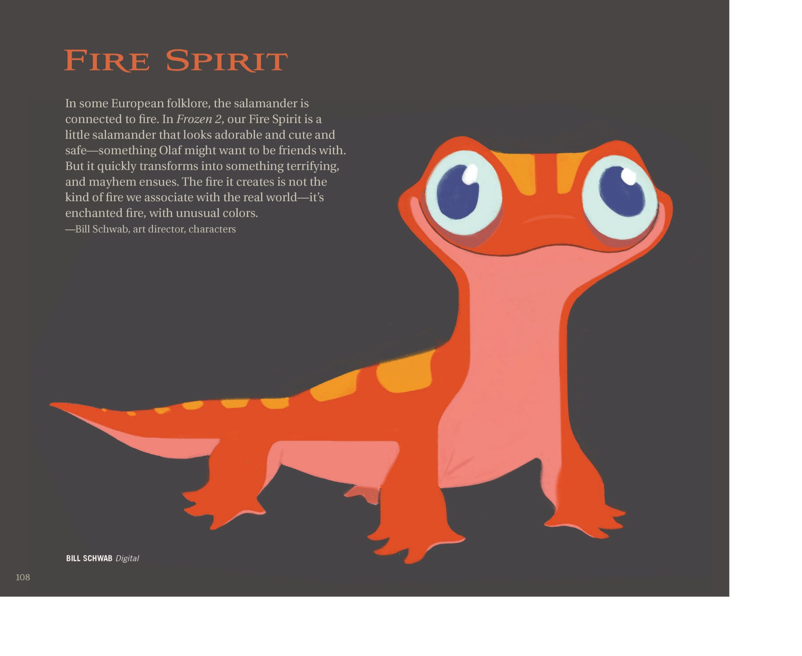
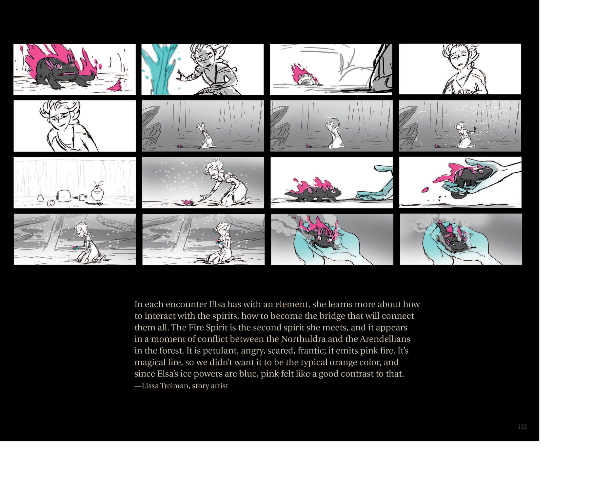
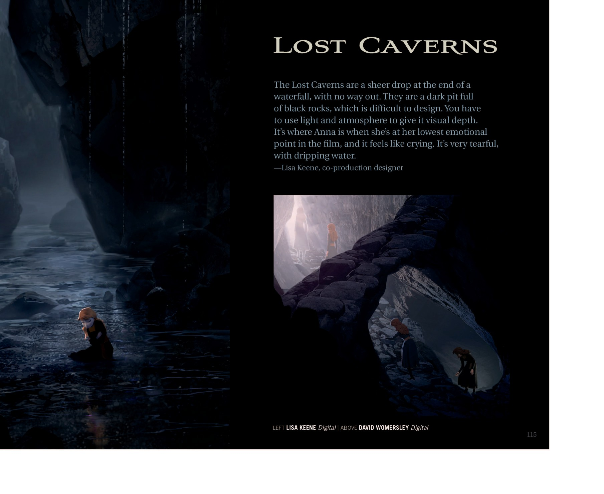
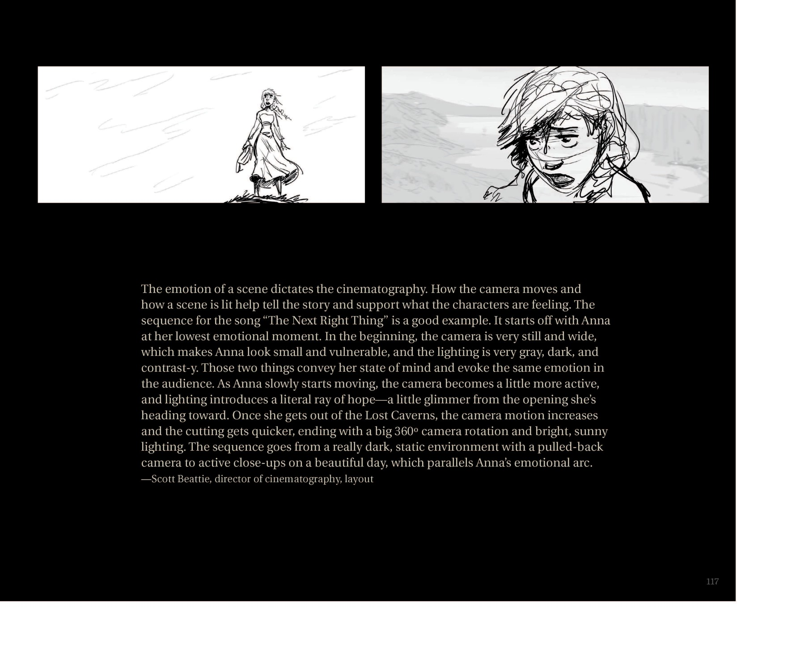

📖 设定集 · F2设定集
F2 图版 · 火之灵与失落洞窟
F2 官方设定集图版 · p110–p121
5
本卷页数
🎨
设定集
中/英
双语
🖼️ F2 官方设定集 · 原书图版
F2 图版 · 火之灵与失落洞窟
《The Art of Frozen II》（Jessica Julius, Chronicle Books 2019） p110–p121
11
图版
p110–p121
原书页码
原书
扫描原图
笔记
逐页图注
🔥 Part Four「Fire」：魔法之火不必像现实之火——火之灵布鲁尼的设定、动作与元素符号，火与冰的对峙分镜，以及安娜情绪最低点的「失落洞窟」与《The Next Right Thing》。
🔥 Part Four: Fire · Bruni · Lost Caverns（p110–p121）

Part Four FIRE 章节扉页
"第四部分：火"章节扉页。引用说明：火是魔法之火，不必像现实火，给团队更多风格化与奇想空间；但仍须契合 Frozen 世界的优雅制作设计；每个镜头都要先问"这段的情感基调是什么"。署名 Lisa Keene。（F2设定集原页）

Fire 章节内（环境气氛图）
一幅纯气氛图，展示 Elsa 等人走入魔法森林后遭遇粉红色奇异落叶与紫色雾气的瞬间；右上方带驯鹿头饰的 Northuldra 长者疑为 Yelana。（F2设定集原页）

Fire 章节内（火之灵 Bruni 设定）
"火之灵"页。引用说明：欧洲民俗中蝾螈与火相关；火之灵是一只可爱安全的小蝾螈（雪宝可能想与之交朋友），但会迅速变成可怕之物并引发混乱；它产生的火是魔法之火，色彩异常。署名 Bill Schwab。（F2设定集原页）

Fire 章节内（Bruni 动作/表演）
四张 Bruni 表演姿态，展示其从"安静"到"喷火/喷焰/化作一团火"的不同状态，色彩以粉红/橙黄为主。署名 James Woods。（F2设定集原页）

Fire 章节内（Bruni 造型开发）
引用说明：所有角色与环境既要服务美学也要服务故事；最初只知道"奇幻火+魔法火焰"，直到导演确定其故事功能；这种"留白"反而激发艺术家想象，等看到分镜后才开始落地。署名 Nick Orsi。（F2设定集原页）

Fire 章节内（火与冰对峙分镜）
标题"火与冰对峙"分镜；展示 Elsa 进入暗窟→遭遇 Bruni→火焰爆发→Elsa 用冰→Bruni 被冰封全过程。署名 Lissa Treiman。（F2设定集原页）

Fire 章节内（Elsa 与火之灵互动分镜）
引用说明：每次与元素相遇，Elsa 都学会如何与灵沟通，成为连接所有灵的桥梁；火之灵是她遇到的第二个灵，出现在 Northuldra 与 Arendelle 人冲突的瞬间；火之灵任性、愤怒、恐惧、慌乱，吐粉色火焰——因为是魔法火而非常规橙色，与 Elsa 冰魔法的蓝色形成对比。署名 Lissa Treiman。（F2设定集原页）

紧接 Fire 章节之后的过渡页（Lost Caverns 入口气氛图）
黑暗、潮湿的失落洞窟入口——破船暗示无人能原路返回；水滴强化"压抑、哭泣"氛围。是电影中 Anna 跌入暗窟的视觉基调。（F2设定集原页）

Lost Caverns 章节扉页
"失落洞窟"章节扉页。引用说明：洞窟是瀑布尽头的绝壁深坑，无法逃出；满布黑色岩石，必须用光与氛围营造视觉纵深；是 Anna 情绪最低点的所在，"像在哭泣"，充满泪水般滴落的水。署名 Lisa Keene（左）、David Womersley（上）。（F2设定集原页）

Lost Caverns 章节内（"The Next Right Thing" 歌曲分镜）
标题"做下一件对的事"（电影插曲名）分镜；6 张蓝调画面表现 Elsa/Anna 在暗窟中的孤立与希望之始。署名 Marc Smith。（F2设定集原页）

Lost Caverns 章节内（电影摄影说明）
引用说明（注意原书将 Caverns 误印为 "Caerns"）：情感决定摄影。相机与光照服务角色心绪。"做下一件对的事"序列从 Anna 情绪最低点开始——相机静止、宽幅使 Anna 显得渺小脆弱，光线灰暗反差强；Anna 开始移动后，光线出现希望之光；走出洞窟后镜头更活跃、剪辑更快，最终以 360° 旋转和明亮阳光（F2设定集原页）
💡 图注说明
本页全部图版为《The Art of Frozen II》（Jessica Julius, Chronicle Books 2019）原书扫描（原图复制，未压缩），图注（中文标题 + 要点首句）逐页取自官方设定集中文笔记，点击图片可查看原尺寸扫描。
📌 本页要点
你正在阅读《设定集》卷的「F2 图版 · 火之灵与失落洞窟」。本页由电影正典、官方设定集与官方小说综合梳理，可作为该主题的速查入口；右侧目录可快速跳转到本页各小节。